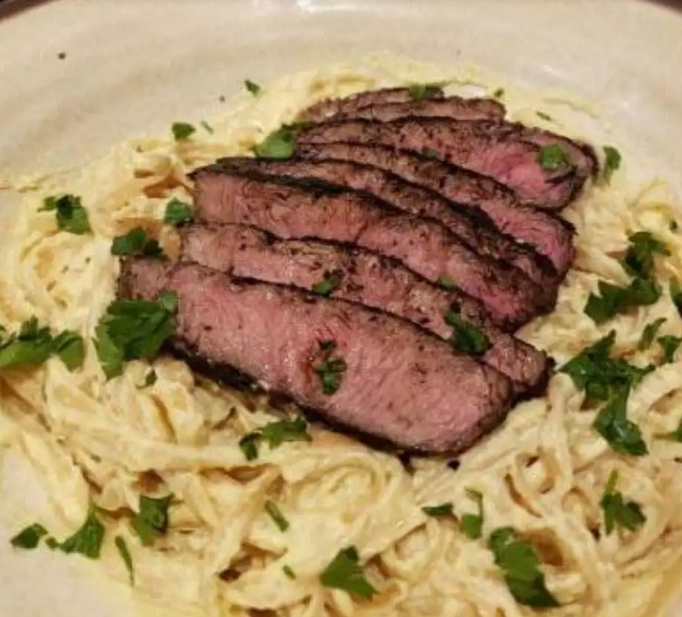

Steak Alfredo

Description
A rich fettuccine alfredo pasta served with a steak
Ingredients
Alfredo
- 1½ cups 2% milk
- 1½ cups heavy cream
- ½ cup grated Parmesan cheese
- ½ cup grated Romano cheese
- 6 jumbo egg yolks
- Salt and ground black pepper to taste
Steak & Marinade
- 1½ cups Italian-style salad dressing
- 1 tablespoon fresh rosemary
- 1 tablespoon lemon juice
- 2 pounds flat iron steak, cut into 3-inch squares
- 4 cups chopped fresh spinach
- 4 tablespoons crumbled Gorgonzola cheese, divided
- 1 pound dry fettuccine pasta
- 2 tablespoons balsamic glaze
- Chopped fresh parsley, or as needed
Steps
- Heat milk and cream in a saucepan over medium heat until simmering, about 5 minutes. Slowly whip in Parmesan and Romano cheeses and remove from heat. Whisk egg yolks together in a heat-proof bowl and slowly add about 1/4 cup of the hot sauce to temper eggs. Whisk egg mixture into the saucepan slowly. Season with salt and pepper. Allow Alfredo sauce to cool and refrigerate until needed.
- Combine salad dressing, rosemary, and lemon juice in a large bowl. Add steak and stir to coat. Marinate in the refrigerator for 4 hours.
- When ready to prepare the meal, preheat an outdoor grill for medium heat and lightly oil the grate.
- Fill a large pot with lightly salted water and bring to a rolling boil. Cook fettuccine at a boil until tender yet firm to the bite, about 8 minutes.
- Heat 2 cups refrigerated Alfredo sauce in a saucepan over medium heat. Add spinach and 2 tablespoons Gorgonzola cheese.
- Remove steak from marinade and cook on the preheated grill to desired doneness, 5 to 10 minutes.
- Pour hot Alfredo sauce into a large serving bowl. Add cooked pasta and mix to combine. Sprinkle remaining Gorgonzola cheese on top. Add grilled steak and drizzle the meat with balsamic glaze. Garnish with parsley.